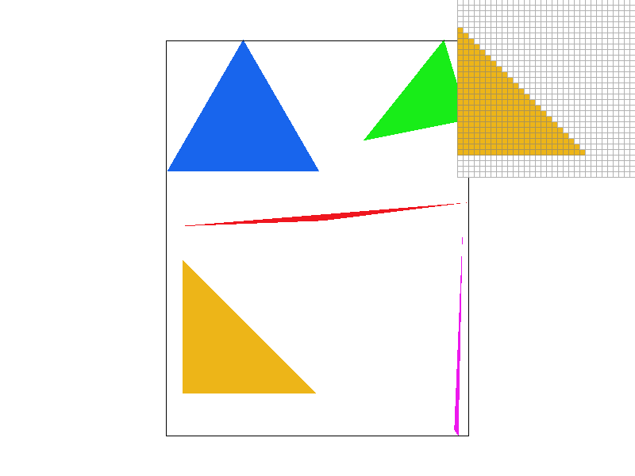
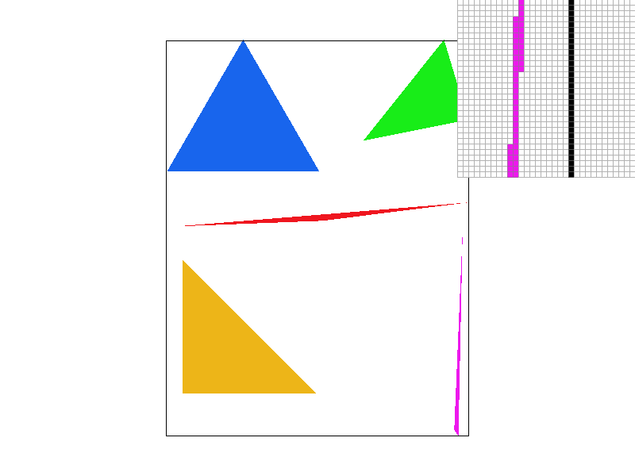
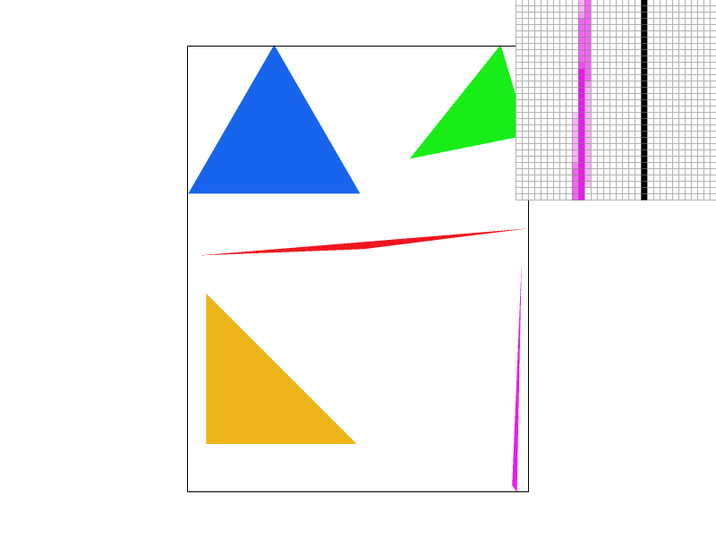
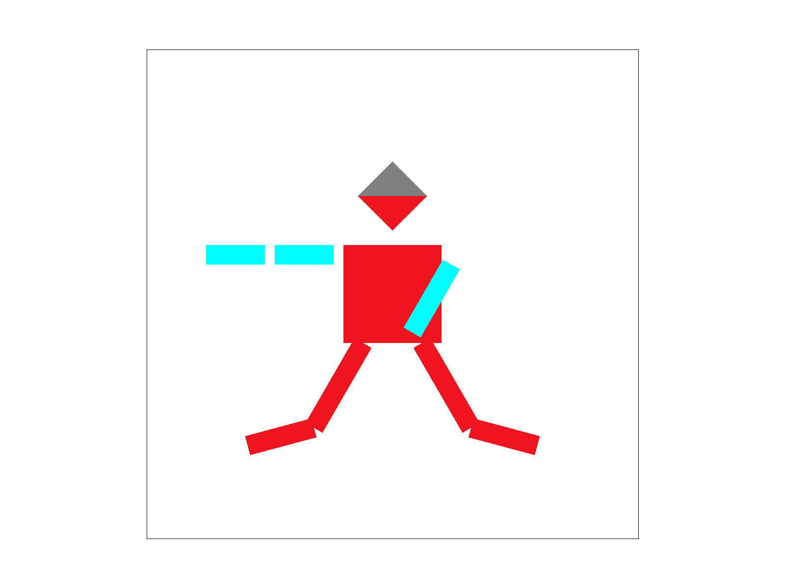
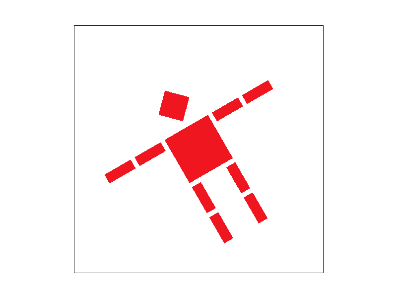
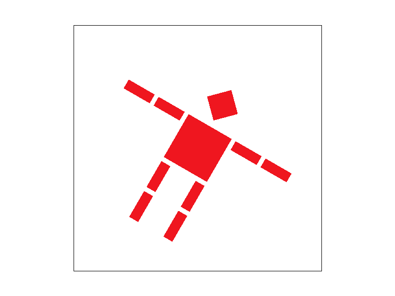
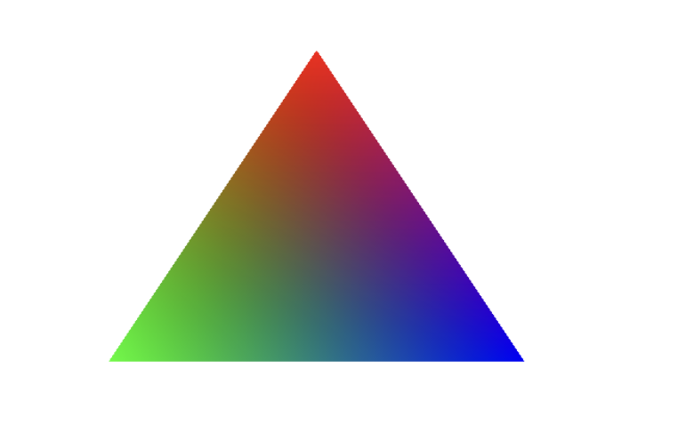
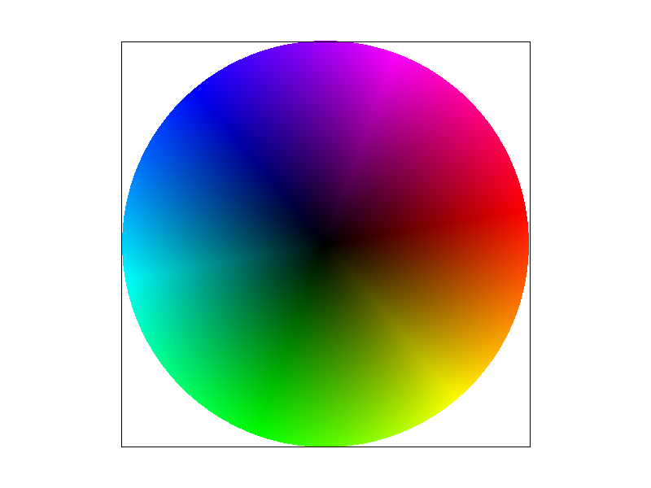
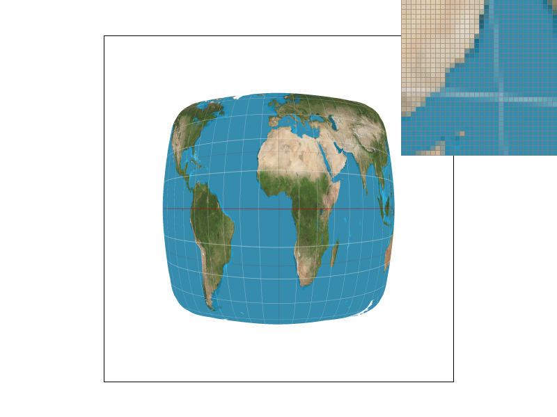
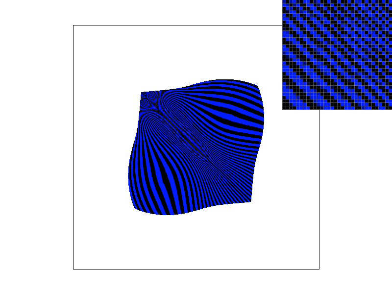

CS 184/284A: Computer Graphics and Imaging, Spring 2024
Homework 1: Rasterizer
Author: Jian Yu🐟, Xiaoyu Zhu🐷
CS 184/284A: Computer Graphics and Imaging, Spring 2024Homework 1: RasterizerAuthor: Jian Yu🐟, Xiaoyu Zhu🐷OverviewSection I: RasterizationPart 1: Rasterizing single-color trianglesPart 2: Antialiasing trianglesPart 3: TransformsSection II: SamplingPart 4: Barycentric coordinatesPart 5: "Pixel sampling" for texture mappingPart 6: "Level sampling" with mipmaps for texture mapping
Overview
In this homework, we implemented a series of graphic rendering techniques, including rasterizing single-color triangles, antialiasing triangles, geometric transformations (translation, scaling, rotation), and different sampling techniques for color interpolation and texture mapping. These techniques together build a basic yet comprehensive 2D graphic rendering pipeline, covering not only the fundamental drawing of graphics but also methods for improving image quality and implementing advanced effects.
From completing this homework, we learned many interesting points. First, by implementing the rasterization algorithm, we gained a deep understanding of how to convert geometric shapes into pixel data, which is the foundation of all graphic rendering tasks. Second, through the application of antialiasing techniques, we learned how to improve the visual effects of rendered images, especially in terms of edge smoothing. Moreover, the implementation of geometric transformations allowed us to manipulate the position, size, and orientation of shapes without altering their intrinsic properties. Finally, exploring sampling techniques taught us how to effectively apply texture mapping and understand how to reduce aliasing issues with mipmaps at different viewpoints and distances, improving rendering effects while maintaining good performance.
Section I: Rasterization
Part 1: Rasterizing single-color triangles
Goal
Implement the rasterize_triangle function in rasterizer.cpp to rasterize single-color triangles.
Main ideas
Our inputs are the coordinates of three points and the color of this triangle(x0, y0, x1, y1, x2, y2, color), with the goal of performing the rasterize_point operation on points that are inside the triangle.
To simplify the computation, instead of traversing the entire image, we first derive the enclosing frame of this triangle from the information of the three points:
float x_max = max(x0, max(x1, x2)); float x_min = min(x0, min(x1, x2)); float y_max = max(y0, max(y1, y2)); float y_min = min(y0, min(y1, y2));Only points with x values between x_min, x_max and y values between y_min, y_max can be in the triangle.
And then we iterate over the integer points in this range, adding 0.5 to x and y and using the barycentric coordinates to determine if they are inside the triangle:
for (int x = floor(x_min); x <= ceil(x_max); x++) { for (int y = floor(y_min); y <= ceil(y_max); y++) { float alpha =(x1 - x0) * (y + 0.5 - y0) - (y1 - y0) * (x + 0.5 - x0); float beta = (x2 - x1) * (y + 0.5 - y1) - (y2 - y1) * (x + 0.5 - x1); float gamma = (x0 - x2) * (y + 0.5 - y2) - (y0 - y2) * (x + 0.5 - x2); if ((alpha >= 0 && beta >= 0 && gamma >= 0) || (alpha <= 0 && beta <= 0 && gamma <= 0)) { rasterize_point(x,y,color); } } }Key points
Get the outer rectangular enclosing box of the triangle to reduce iteration.
Determine if the point at x+0.5, y+0.5 is inside the triangle, rather than determining the point at x, y.
Use barycentric coordinates to help us decide whether the point is inside the triangle or not.
Result
 For extra credit
For rasterization acceleration, we consider using the intersecting lines algorithm. But as soon as we started using this algorithm, we realized that the results showed some horizontal lines that should not be there. So we realized that we did not handle the horizontal lines very well. Finally, we used the following algorithm.
Determine the relative positions of the three vertices to determine whether it is a flat top/flat bottom or a general triangle
Split the general triangle horizontally into a flat-bottomed and a flat-topped triangle with a vertex in the center
Generate new boundary points on the long side by interpolation
Run the rasterization algorithm for the top/bottom triangles separately for the flat/flat tops.
Each time a line is drawn, two boundary points are generated by interpolation, and the portion between the boundary points is drawn.
We first determine the order of y-coordinates of the three points
if (y0 > y1) std::swap(y0, y1), std::swap(x0, x1);if (y1 > y2) std::swap(y1, y2), std::swap(x1, x2);if (y0 > y1) std::swap(y0, y1), std::swap(x0, x1);Discussion of different scenarios based on the algorithm
if (y1 == y2) { // Flat-top rasterize_flat_top_triangle(x0, y0, x1, y1, x2, y2, color);}else if (y0 == y1) { // Flat-bottom rasterize_flat_bottom_triangle(x0, y0, x1, y1, x2, y2, color);}else { // General case: split the triangle float alpha = (y1 - y0) / (y2 - y0); float xA = x0 + (x2 - x0) * alpha; float yA = y1; // same as y1 rasterize_flat_top_triangle(x0, y0, x1, y1, xA, yA, color); rasterize_flat_bottom_triangle(x1, y1, xA, yA, x2, y2, color);}To implement rasterize_flat_top_triangle, the following actions are taken:
Get coordinates of points with non-flat tops
Calculate the slopes of the two hypotenuse edges, calculating the coordinates of the points from both sides upwards in turn
Draw the entire calculated line directly
void RasterizerImp::rasterize_flat_top_triangle(float x0, float y0, float x1, float y1, float x2, float y2, Color color){ float slope1 = (x1 - x0) / (y1 - y0); float slope2 = (x2 - x0) / (y2 - y0);
for (int y = std::round(y0); y <= floor(y1); y++) { float y_center = y + 0.5f; if (y_center > y2) { break; } float x_start = x0 + (y_center - y0) * slope1; float x_end = x0 + (y_center - y0) * slope2;
int x_start_int = std::round(x_start); int x_end_int = std::round(x_end);
rasterize_line(x_start_int, y, x_end_int, y, color); }}Result comparison
Original time Execution time: 0.0438981s Execution time: 0.0045152s Execution time: 0.0208816s Execution time: 0.0140998s
New time Execution time: 0.0363548s(-) Execution time: 0.0056131s(+) Execution time: 0.0214859s(+) Execution time: 0.0093578s(-)
We can find both increases and decreases in running time, and generally an improvement in very complex drawings.
Part 2: Antialiasing triangles
Goal
Using supersampling method to antialias triangles
Idea: why is supersampling useful?
Intuitively speaking, using supersampling can integrate more information during sampling process, although the colors are averaged, those extra information can still remain in the final image by affecting the RGB value of each pixel, so it definately will have a better vision result.
In another perspect of view, supersampling can be regarded as using a small converlution kernel to pre-filter the image to remove high frequence especially those above Nyquist frequence, and then do standard sample.
Implemetation
data structure:
Sample buffer: with a size of sample_rate * width * height, to save color on each supersample points.
Frame buffer: with a size of width * height, to save color on each frame points.
pipeline
First resize the sample buffer by multiple sample rate, so there will be enough memory to save color for each sample points.
void RasterizerImp::set_sample_rate(unsigned int rate) {// TODO: Task 2: You may want to update this function for supersampling supportthis->sample_rate = rate;this->sample_buffer.resize(width * height * rate, Color::White);}Then calculate the coordinate of each sample point and save color in smaple_buffer. Assume that for grid (x,y), there will be
Next, average color saved in sample buffer and convert it to frame buffer. For each point (x,y) on frame buffer, find the corresponding sample rate points in sample buffer and average their color to get the final result.
for (int i = 0; i < sqrt(sample_rate); i++) {for (int j = 0; j < sqrt(sample_rate); j++) {col += sample_buffer[(y * sqrt(sample_rate) + i) * width * sqrt(sample_rate) + x * sqrt(sample_rate) + j];}}Finaly, draw from frame buffer to screen as what we did in task1.
Result: screenshots of basic/test4.svg with sample rates 1, 4, 9 and 16.
 As the sample rate increases from no supersampling to high supersampling, there's a significant improvement in the rendered image quality. The reason is that the absence of additional samples means the renderer cannot accurately depict the fine details of small or slender geometric shapes, leading to jagged edges or missing details. Additional sampling provides a higher chance to include geometric edges or small areas within the sampling grid, offering a better approximation of the true shape boundaries.
Part 3: Transforms
Goal
Implement translate, scale, rotate
Implementation
Translate
Translation matrix:
So:
Matrix3x3 translate(float dx, float dy) {// Part 3: Fill this in.Matrix3x3 m = Matrix3x3();m(0, 2) = dx;m(1, 2) = dy;return m;}Scale
Scale matrix:
So:
xxxxxxxxxxMatrix3x3 scale(float sx, float sy) {// Part 3: Fill this in.Matrix3x3 m = Matrix3x3();m(0, 0) = sx;m(1, 1) = sy;return m;}Rotate
Rotate matrix:
So:
xxxxxxxxxxMatrix3x3 rotate(float deg) {// Part 3: Fill this in.float rad = deg * PI / 180;Matrix3x3 m = Matrix3x3();m(0, 0) = cos(rad);m(0, 1) = -sin(rad);m(1, 0) = sin(rad);m(1, 1) = cos(rad);return m;}
Result
orginal robot:

Our new robot who is dancing:

For extra credit
In this section, we respectively use the keys 'A' and 'D' to rotate the viewpoint counterclockwise and clockwise around the screen center, with each rotation being 10 degrees.
keyboard event detection:
xxxxxxxxxxcase 'A': // counterclockwiseif (event == EVENT_PRESS) {rotate_view(-10); // rotate for 10 degreesredraw();}break;case 'D': // clockwiseif (event == EVENT_PRESS) {rotate_view(10); // rotate for 10 degreesredraw();}rotate:
Instead of manipulating the SVG to NDC and NDC to screen-space matrix, we do rotation directly in screen coordinate. First we calculate the screen center coordinate (width/2, height/2); then assign rotates_svg[current_svg] for each svg file to save the rotation matrix in screen coordinate:
xxxxxxxxxxvoid DrawRend::rotate_view(float angle) {Matrix3x3& m = rotate_svg[current_svg];float rad = angle * PI / 180.0; // degree to radius// rotation matrixMatrix3x3 rotate = Matrix3x3::identity();rotate(0, 0) = cos(rad);rotate(0, 1) = -sin(rad);rotate(1, 0) = sin(rad);rotate(1, 1) = cos(rad);float centerX = width / 2.0;float centerY = height / 2.0;// translationMatrix3x3 translateToOrigin = translate(-centerX, -centerY);// translation backMatrix3x3 translateBack = translate(centerX, centerY);// accumulate rotationm = translateBack * rotate * translateToOrigin * m;}When draw the file to the screen, modify the matrix by left multiplying the rotation matrix:
xxxxxxxxxxsvg.draw(software_rasterizer, rotate_svg[current_svg] * ndc_to_screen * svg_to_ndc[current_svg]);
Result
Press "A" for several times and press "D" for several times.

Section II: Sampling
Part 4: Barycentric coordinates
* Explaination of barycentric coordinates
Barycentric coordinates offer a way to express the position of a point within a triangle (or more generally, within a simplex in higher dimensions) using the vertices of that triangle as reference points. These coordinates are a set of three numbers (in the case of a triangle) that represent the weights or influence each vertex of the triangle has on a specific point inside it. The key property of barycentric coordinates is that they sum up to 1.
magine you have a triangle with vertices A, B, and C. Any point P inside (or on the edges of) this triangle can be described using barycentric coordinates (

As shown above, its three vertices are red, green, and blue, and the other colors are determined by the coordinates of their centers of gravity.
Goal
Implement RasterizerImp::rasterize_interpolated_color_triangle(...) to draw a triangle with colors defined at the vertices and interpolated across the triangle area using barycentric interpolation.
Main ideas
Just as the code in Task 1, we first get the bounding box of the triangle. Then for pixels in the box, we calculate the barycentric coordinates of this pixel
With the coordinates of the center of gravity about the three points, we can get the color of this point by weighting.
xxxxxxxxxxfloat x_max = max(x0, max(x1, x2));float x_min = min(x0, min(x1, x2));float y_max = max(y0, max(y1, y2));float y_min = min(y0, min(y1, y2));
for (int x = floor(x_min); x <= floor(x_max); x++) { for (int y = floor(y_min); y <= floor(y_max); y++) { for (int i = 0; i < sqrt(sample_rate); i++) { for (int j = 0; j < sqrt(sample_rate); j++) { float detT = (y1 - y2) * (x0 - x2) + (x2 - x1) * (y0 - y2); float alpha = ((y1 - y2) * (x + (2 * i + 1) * grid - x2) + (x2 - x1) * (y + (2 * j + 1) * grid - y2)) / detT; float beta = ((y2 - y0) * (x + (2 * i + 1) * grid - x2) + (x0 - x2) * (y + (2 * j + 1) * grid - y2)) / detT; float gamma = 1 - alpha - beta;
if ((alpha >= 0 && beta >= 0 && gamma >= 0) || (alpha <= 0 && beta <= 0 && gamma <= 0)) { Color new_color = alpha * c0 + beta * c1 + gamma * c2; sample_buffer[(y * sqrt(sample_rate) + i) * width * sqrt(sample_rate) + x * sqrt(sample_rate) + j] = new_color; } } } }}Result

Part 5: "Pixel sampling" for texture mapping
Goal
Implement texture mapping, including nearest sampling and billear sampling
Main idea
sample_nearestFirst, we can access a specific level of a texture's mipmap and retrieve its dimensions (width and height)xxxxxxxxxxauto& mip = mipmap[level];int width = mip.width;int height = mip.height;Then, performs the conversion of UV coordinates to pixel coordinates within a texture map, using rounding to determine the nearest pixel (or texel) position
xxxxxxxxxxint x = round(uv.x * width);int y = round(uv.y * height);Finally, we can return the color of this pixel.
sample_bilinearThe same as what we do insample_nearest, we can first get the shape of specific mipmap and transform uv to pixel coordinate:xxxxxxxxxxauto& mip = mipmap[level];float width = mip.width;float height = mip.height;// uv to pixel coordinatefloat x = uv.x * width;float y = uv.y * height;In order to use bilinear to sample, we should get four near pixels and their color:
xxxxxxxxxx// get the four pixelsint x0 = floor(x);int y0 = floor(y);int x1 = min(x0 + 1, (int)width - 1);int y1 = min(y0 + 1, (int)height - 1);// get the four colorsColor c00 = mip.get_texel(x0, y0);Color c01 = mip.get_texel(x0, y1);Color c10 = mip.get_texel(x1, y0);Color c11 = mip.get_texel(x1, y1);Then we can interpolate the color to get our final result:
xxxxxxxxxxfloat dx = x - x0;float dy = y - y0;Color c0 = (1 - dx) * c00 + dx * c10;Color c1 = (1 - dx) * c01 + dx * c11;Color c = (1 - dy) * c0 + dy * c1;return c;rasterize_textured_triangleAfter implement sample_nearest and sample billinear, we can rasterize texture triangle easily. We can first get bounding box and get the barycentric coordinates of each pixel, noted asalpha,beta,gamma. Then for pixels in the triangle, we can get their texture coordinates:xxxxxxxxxxdouble u = alpha * u0 + beta * u1 + gamma * u2;double v = alpha * v0 + beta * v1 + gamma * v2;Vector2D uv(u, v);Then we can sample the color according to the value of
psm(P_NEARESTorP_LINEAR)xxxxxxxxxxColor new_color;if (psm == P_NEAREST){new_color = tex.sample_nearest(uv, 0);}else if (psm == P_LINEAR){new_color = tex.sample_bilinear(uv, 0);}rasterize_point(x, y, new_color);
Result

The top left corner is nearest sampling with supersample 1, the bottom left corner is bilinear sampling with supersample 16, the top right corner is nearest sampling with supersample 16, and the bottom right corner is bilinear sampling with supersample 16. We can find that in the case of this thin bar, nearest sampling leads to undersampling and discontinuities. This situation is improved if bilinear sampling is used. If supersampling is added, this situation can also be directly improved due to the direct increase of the sampling value.
Part 6: "Level sampling" with mipmaps for texture mapping
Explaination for level sampling
Level sampling is a way to antialias. When both the screen sampling rate and the texture frequency are fixed, and the object is far from the camera, which means it appears smaller on the screen, a small area of the screen corresponds to a large area of the texture. Consequently, the texture sampling rate becomes lower. When the sampling rate falls below the Nyquist frequency, it leads to aliasing artifacts such as Moiré patterns due to the undersampling. Therefore, in such cases, it's necessary to use a pre-filter to remove the high-frequency components of the texture, that is, to reduce the sampling rate using mipmaps before sampling.
Implemention
For each pixel (x+(2*i+1)*grid,y+(2*j+1)*grid), calculate its bycentric coordinates. If alpha, beta and gamma are positive, which means the pixel is inside the triangle, then use interpolation to get (u,v) coordinate on texture. Use the same process to get (u1,v1), (u2,v2) for pixel (x+(2*i+1)*grid+1,y+(2*j+1)*grid) and (x+(2*i+1)*grid,y+(2*j+1)*grid+1). In the function get_level, we can calculate
Tradeoffs between three methods
pixel sample need lowest memory and has fastest speed, but it has almost no antialiasing power.
Supersampling has best antialiasing power, but it need sample_rate times memory space and is the slowest one to run.
Level sampling use a little extra memory to save mipmaps and extra time to calculate sample level before sampling. However, these additional time and memory cost are much less than supersampling method, and level sampling also has powerful ability for antialiasing.
Result

We use the reference output images given for 01_degenerate_square1.svg file in hardcore folder to show performance for four different combinations, because this texture has details on different levels. From left to right, from top to bottom, they are respectively L_ZERO and P_NEAREST, L_ZERO and P_LINEAR, L_NEAREST and P_NEAREST, L_NEAREST and P_LINEAR.
We can see that only sampling on level 0 results in a moiré pattern appearing along the diagonal. The results obtained using P_LINEAR during sampling are smoother compared to P_NEAREST, but there is not a significant improvement. However, using the level sampling method noticeably improves the moiré pattern.